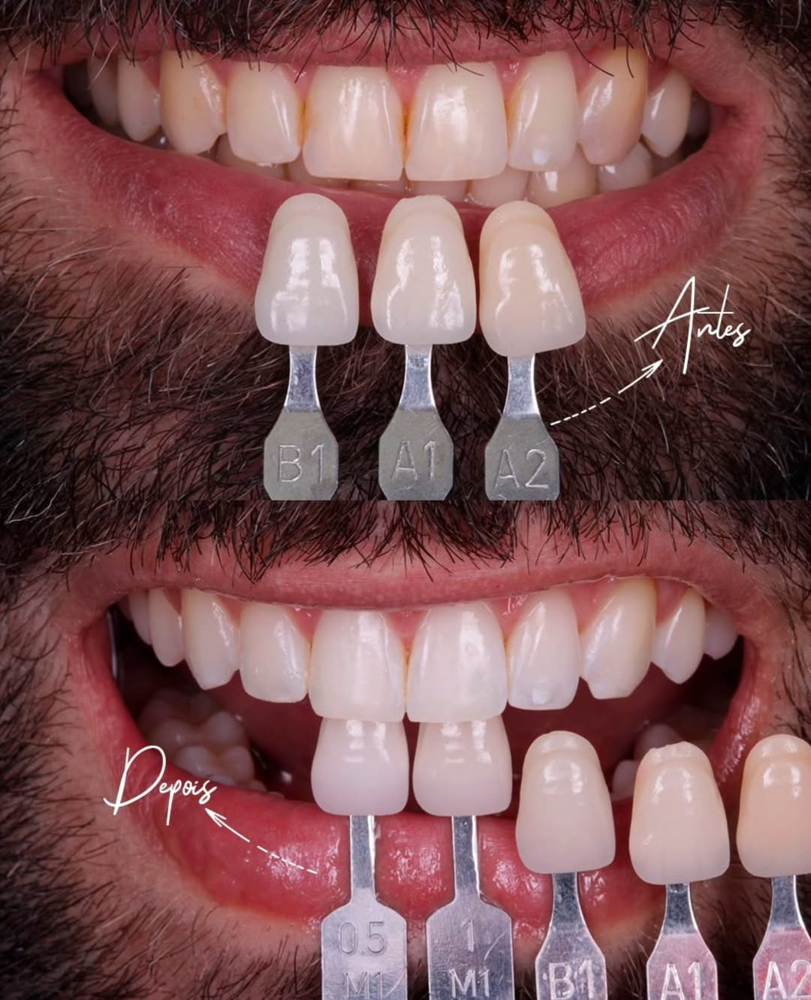

Um sorriso que sempre foi seu — agora, à vista de todos.
Lentes de contato dental e laminados cerâmicos com técnica minimamente invasiva, preservando o esmalte natural dos seus dentes. Atendimento em Cruzeiro do Sul e em toda a região do Vale do Juruá.
Sua avaliação inclui: exame clínico completo + simulação digital do seu sorriso.
Dr. Carlos Magalhães
CRO-AC 2383
Cirurgião-dentista com atuação focada em lentes de contato dental e laminados cerâmicos, com uma filosofia clara: o dente natural do paciente é o ponto de partida, não um obstáculo a remover. Sempre que clinicamente indicado, o preparo é minimamente invasivo, preservando ao máximo o esmalte antes de aplicar as lâminas cerâmicas ultrafinas.
Atende em Cruzeiro do Sul, recebendo pacientes de toda a região do Vale do Juruá, no Acre.
Falar com a clínicaO mínimo necessário.
O máximo de cuidado.
Muitas técnicas de faceta exigem desgastar boa parte do dente saudável para encaixar a peça. A filosofia do Dr. Carlos Magalhães é outra: sempre que clinicamente indicado, o preparo é mínimo, às vezes inexistente, preservando o esmalte natural que já é seu.
As lâminas cerâmicas são produzidas sob medida, com espessura e cor selecionadas uma a uma, e cimentadas com precisão sobre a estrutura do dente. O resultado não parece "instalado": parece o sorriso que você sempre deveria ter tido.
Esperar não traz nenhum benefício: cada mês adiando é um mês a mais convivendo com o que te incomoda no espelho, sem necessidade — já que o preparo, quando indicado, é mínimo e preserva o seu dente.
Avaliar meu caso
Qual é a sua principal queixa com o sorriso?
Escolha a opção mais parecida com o seu caso e já comece a conversa certa no WhatsApp.
Resultados reais
Cada caso abaixo é de um paciente atendido pelo Dr. Carlos Magalhães. Resultados podem variar de acordo com a condição clínica de cada paciente.
O momento da instalação
A reação é sempre a mesma: o instante em que a lente é colocada e o sorriso muda na hora.
Como funciona o tratamento
-
01
Avaliação clínica
Exame completo do sorriso e da saúde bucal para indicar a técnica mais adequada ao seu caso.
-
02
Planejamento digital do sorriso
Simulação do resultado antes mesmo de iniciar o tratamento, com total clareza sobre o que esperar.
-
03
Seleção de cor e formato
Cada lente ou laminado é escolhido sob medida: cor, espessura e formato pensados para o seu rosto.
-
04
Preparo minimamente invasivo
Desgaste mínimo, por vezes inexistente, do esmalte, conforme a indicação clínica de cada paciente.
-
05
Instalação de precisão
Cimentação cuidadosa das lâminas cerâmicas, com ajuste fino de encaixe, cor e textura.
-
06
Acompanhamento
Orientações de cuidado e retornos para garantir a longevidade do seu novo sorriso.
Atendimento em Cruzeiro do Sul e em toda a região
O consultório do Dr. Carlos Magalhães fica em Cruzeiro do Sul, no Acre, e recebe pacientes de toda a região do Vale do Juruá, incluindo Mâncio Lima, Rodrigues Alves, Porto Walter, Marechal Thaumaturgo e Tarauacá. Se você está buscando um profissional dedicado a lentes de contato dental e laminados cerâmicos na sua região, agende uma avaliação.
- Cruzeiro do Sul
- Mâncio Lima
- Rodrigues Alves
- Porto Walter
- Marechal Thaumaturgo
- Tarauacá
Dúvidas comuns
Como funciona a avaliação?
O Dr. Carlos Magalhães examina a saúde bucal e o sorriso, explica qual técnica é mais indicada para o seu caso e mostra uma simulação digital do resultado antes de qualquer decisão.
Preciso desgastar meus dentes para colocar as lentes?
Sempre que clinicamente indicado, o preparo é mínimo — por vezes inexistente — preservando o esmalte natural. O quanto se aplica ao seu caso é definido na avaliação.
O preparo dói?
Quando algum preparo é necessário, costuma ser simples, com anestesia local nos casos indicados. O Dr. Carlos explica o que esperar no seu caso durante a avaliação.
Quanto tempo leva o tratamento?
O tempo varia de acordo com o número de lentes e a condição clínica de cada paciente — isso é definido com precisão na sua avaliação.
Seu sorriso não precisa esperar.
Agende uma avaliação com o Dr. Carlos Magalhães e descubra o que a técnica minimamente invasiva pode fazer pelo seu sorriso.
Quero agendar pelo WhatsApp